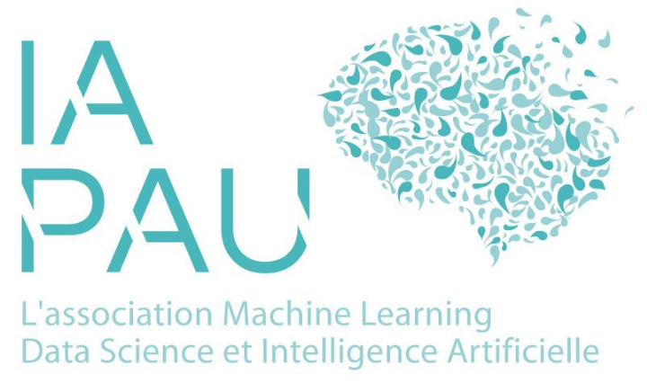

Dans le cadre du festival IAPau8, qui aura lieu le vendredi 4 décembre à 10h30 à l'Universite de Pau, verra un ateliers sur les conséquences sociales et environnementales du déploiement d'une IA plus souveraine et plus résiliente.
Par Lilian Delétoile, Assistant de recherche, laboratoire ETIS, et Paul Gay, Enseignant Chercheur CY Tech, chercheur associé au LIUPPA
Il existe de multiples façons de développer une IA. Mais, depuis l'augmentation des conflits dans le monde et la hausse des prix du matériel informatique, un vœu de souveraineté et de résilience se fait entendre et s'associe aux questions de l'impact environnemental. Il y a donc un besoin d'élaborer un déploiement d'IA qui envisage conjointement les aspects économiques, souverains et environnementaux.
Après une introduction sur l'actualité de 2026 sur ces questions, l'atelier présentera l'implémentation d'une telle méthodologie, qui a été développée en 2026 entre le laboratoire ETIS et l'entreprise LIPSTIP, afin de comparer deux stratégies IA : développement d'un produit IA sur des infrastructures internes par rapport à l'externalisation chez de grands comptes.
Plusieurs scénarios de déploiement sont analysés sous les angles économique, social et environnemental, en intégrant les notions de souveraineté et de résilience. Ce travail vise à montrer en quoi ces dimensions peuvent constituer un levier favorable au développement durable et stratégique de l’entreprise. Plus généralement, nous montrerons comment ces différentes dimensions peuvent être quantifiées et intégrées dans une démarche qualitative pour gérer les déploiements d'IA.
Cette session participera à la création d'un groupe de travail et à l'amélioration de notre réseau de connaissances pour traiter ces questions sur notre territoire.
Pour toute question sur le festival, contactez-nous à contact@iapau.org.
Référent de l'organisation : Lilian Delétoile - liliandel.etoile@gmail.com
Rendez-vous le vendredi 4 décembre, pour une journée riche en échanges à IAPau8